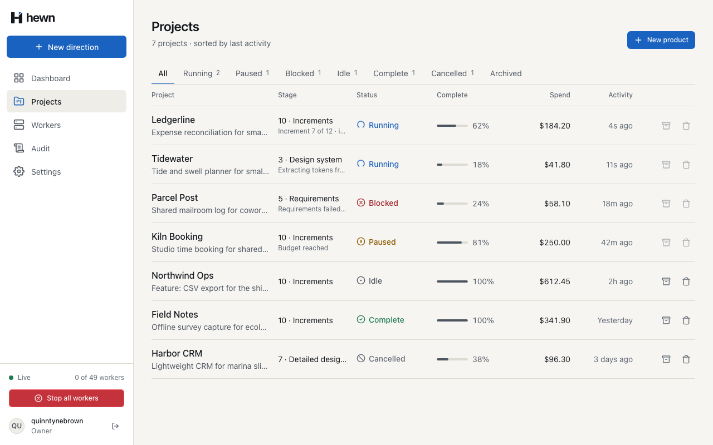
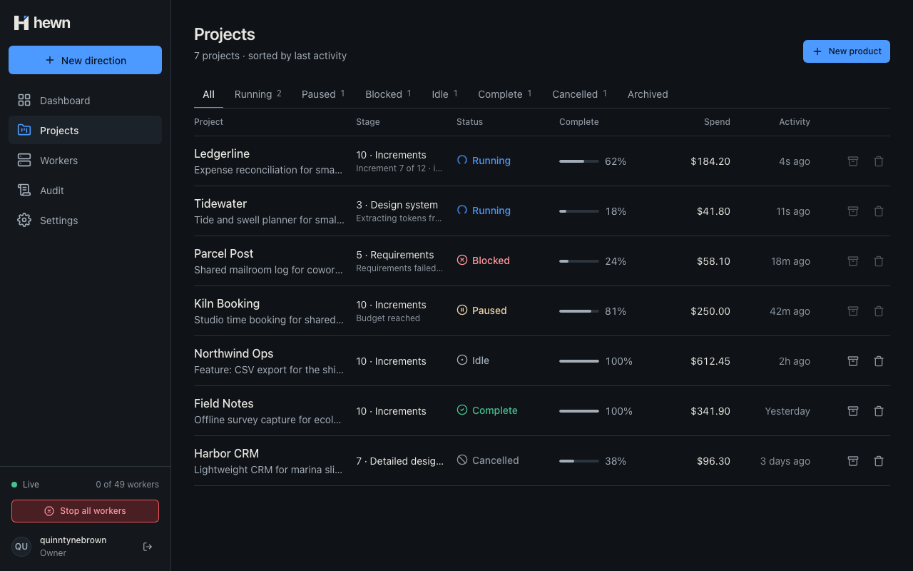
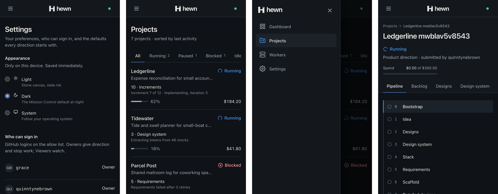
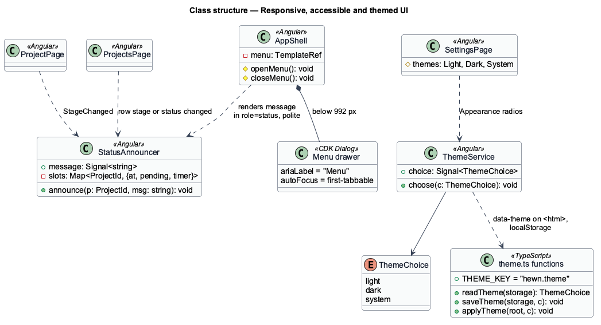
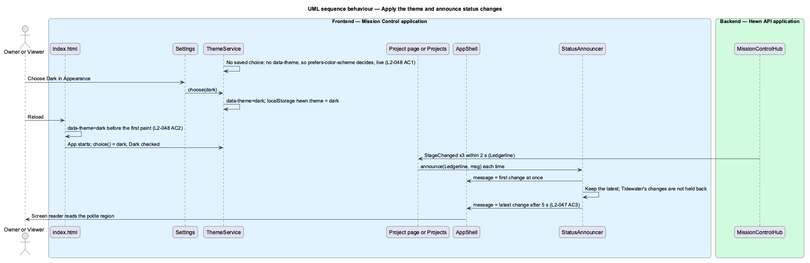
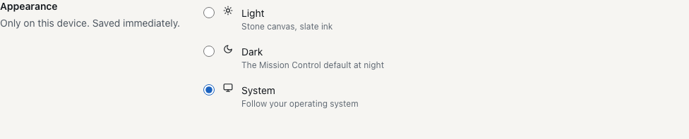
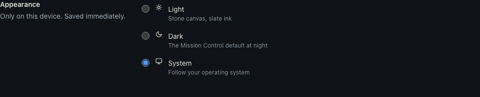

Light, Dark or System on each device, kept across reloads, readable in both.



:root {
/* ---------- Light theme (default) ---------- */
/* colour */
--color-bg-canvas: var(--palette-stone-100);
[data-theme="dark"] {
/* colour */
--color-bg-canvas: var(--palette-slate-950);
@media (prefers-color-scheme: dark) {
:root:not([data-theme="light"]) {
/* colour */
--color-bg-canvas: var(--palette-slate-950);
export function applyTheme(root: HTMLElement, choice: ThemeChoice): void {
if (choice === 'system') root.removeAttribute('data-theme');
else root.setAttribute('data-theme', choice);
}
export class ThemeService {
private readonly root = inject(DOCUMENT).documentElement;
private readonly storage = localStorageOf(inject(DOCUMENT));
private readonly current = signal<ThemeChoice>(readTheme(this.storage));
readonly choice = this.current.asReadonly();
constructor() {
applyTheme(this.root, this.current());
}
choose(choice: ThemeChoice): void {
this.current.set(choice);
applyTheme(this.root, choice);
saveTheme(this.storage, choice);
}
}
<script>
try {
var theme = localStorage.getItem('hewn.theme');
if (theme === 'light' || theme === 'dark')
document.documentElement.setAttribute('data-theme', theme);
} catch (e) {}
</script>
<input
type="radio"
name="theme"
[value]="option.value"
[checked]="theme.choice() === option.value"
(change)="theme.choose(option.value)"
/>


it('sets data-theme for Light and Dark, and removes it for System so the OS decides', () => {
const el = root();
applyTheme(el, 'dark');
expect(el.attrs).toEqual({ 'data-theme': 'dark' });
applyTheme(el, 'light');
expect(el.attrs).toEqual({ 'data-theme': 'light' });
applyTheme(el, 'system');
expect(el.attrs).toEqual({});
});
await settings.themeChoice('Dark').check();
expect(await theme.shown()).toBe('dark');
const dark = await theme.background();
expect(dark, 'the page background changes with the theme').not.toBe(light);
await page.reload();
await expect(settings.themeChoice('Dark')).toBeChecked();
expect(await theme.shown()).toBe('dark');
await theme.osPrefers('dark');
await theme.osPrefers('light');
expect(await theme.shown(), 'a saved Dark ignores the OS').toBe('dark');
Projects light 0 violations ( 89 checked) dark 0 violations ( 89 checked) New direction light 0 violations ( 60 checked) dark 0 violations ( 60 checked) Workers light 0 violations (416 checked) dark 0 violations (416 checked) Audit light 0 violations (457 checked) dark 0 violations (455 checked) Settings light 0 violations (138 checked) dark 0 violations (138 checked)

